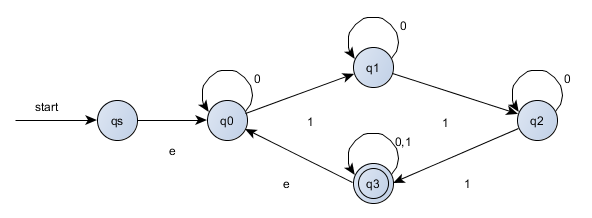

Solutions for Computation
Table of Contents
- 1. chapter 1
- 1.1. M1 and M2
- 1.2. formal description
- 1.3. diagram of DFA
- 1.4. intersection of two languages
- 1.5. complement of language
- 1.6. diagram of DFAs
- 1.7. diagram of NFAs with specified states
- 1.8. recognize union of languages
- 1.9. recognize concatenation of languages
- 1.10. recognize start of languages
- 1.11. NFA convertion
- 1.12. DFA with five states
- 1.13. 1s separated by odd symbols
1 chapter 1
1.1 M1 and M2
- q1
- M1: {q2}, M2: {q4}
- M1: q1 -> q2 -> q3 -> q1 -> q1, M2: q1 -> q1 -> q1 -> q2 -> q4
- M1: yes, M2: no
- M1: no, M2: yes
1.2 formal description
{Q={q1, q2, q3}, E={a, b}, q1, {q2}, transition}
state a b q1 q2 q1 q2 q3 q3 q3 q2 q1 {Q={q1, q2, q3, q4}, E={a, b}, q1, {q1, q4}, transition}
state a b q1 q1 q2 q2 q3 q4 q3 q2 q1 q4 q3 q4
1.3 diagram of DFA

1.4 intersection of two languages
1.5 complement of language


1.6 diagram of DFAs


1.7 diagram of NFAs with specified states


1.8 recognize union of languages

1.9 recognize concatenation of languages


1.10 recognize start of languages
- 

1.11 NFA convertion
Question: Prove that every NFA can be converted to an equivalent one that has a single accept state
Answer: Asume the NFA is N = {Q, Σ, δ, q0, F}, F is the set of final states. Thus, we can construct a new NFA N1 = {Q, Σ, δ1, q0, F1}, the represent is as follows:
- F1 = {qf}
- δ1(q, a) = δ(q, a), q belongs to Q and q not belong to F
- δ1(q, ε) = δ(q, ε) U {qf}, q belongs to F, qf belongs to F1
Now, we can prove it in bidirection:
==> w is any string accepted by NFA N, so we can conclude that δ(w, a) belongs to F. according the transition function above, w is accepted by NFA N1.
<== w is any string accepted by NFA N1, and w = wε, according to formula δ1(q, ε) = qf, q = δ1(q0, w) = δ(q0, w) belongs to F, so w is also accepted by NFA N.
1.12 DFA with five states
It can be descripted by the following: D = {odd b's followed by even a's}, now the answer is not correct, ignore it!
Answer has been fixed, now it's right.
1.13 1s separated by odd symbols
First, we should construct a NFA, then convert it to a DFA. this DFA has 7 states, besides, the last three final states with all other states pointing at them and no one point out, so we can combine them into one final state.